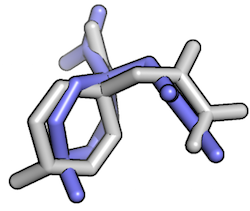

Working with molecular structures in pandas DataFrames


Links
- Documentation: http://rasbt.github.io/biopandas/
- Source code repository: https://github.com/rasbt/biopandas
- PyPI: https://pypi.python.org/pypi/biopandas
Examples

>>> ppdb = PandasPDB()
>>> ppdb.fetch_pdb('3eiy')
>>> ppdb.df['ATOM'].head()


>>> pl1 = PandasPDB()
>>> pl1.read_pdb('./docking_pose_1.pdb')
>>> pl2 = PandasPDB()
>>> pl2.read_pdb('./docking_pose_2.pdb')
>>> r = PandasPDB.rmsd(pl1.df['HETATM'], pl2.df['HETATM'], s='no hydrogen')
>>> print('RMSD: %f' % r)
RMSD: 2.6444
Quick Install
- latest version (from GitHub):
pip install git+git://github.com/rasbt/biopandas.git#egg=biopandas - latest PyPI version:
pip install biopandas